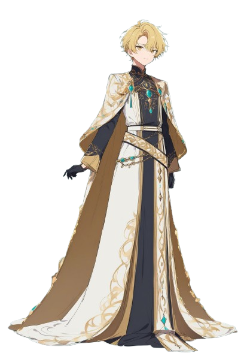

カタチ音叉は、柔らかく澄んだ声質を持つ男性の日本語UTAU音源です。ポップス、ローファイ、エモーショナルな楽曲に向いています。
プロフィール
- 名前: カタチ音叉 (Katachi Onsha)
- 読み: かたち おんしゃ
- 言語: 日本語
- 性別: 男性
- 身長: 168 cm
- 体重: 56 kg
- 好き: 夜の音楽、シンセサイザー、雨
- 苦手: 大きな騒音、争いごと
日本語 UTAU 音源
by SynthDragon Studios

カタチ音叉は、柔らかく澄んだ声質を持つ男性の日本語UTAU音源です。ポップス、ローファイ、エモーショナルな楽曲に向いています。